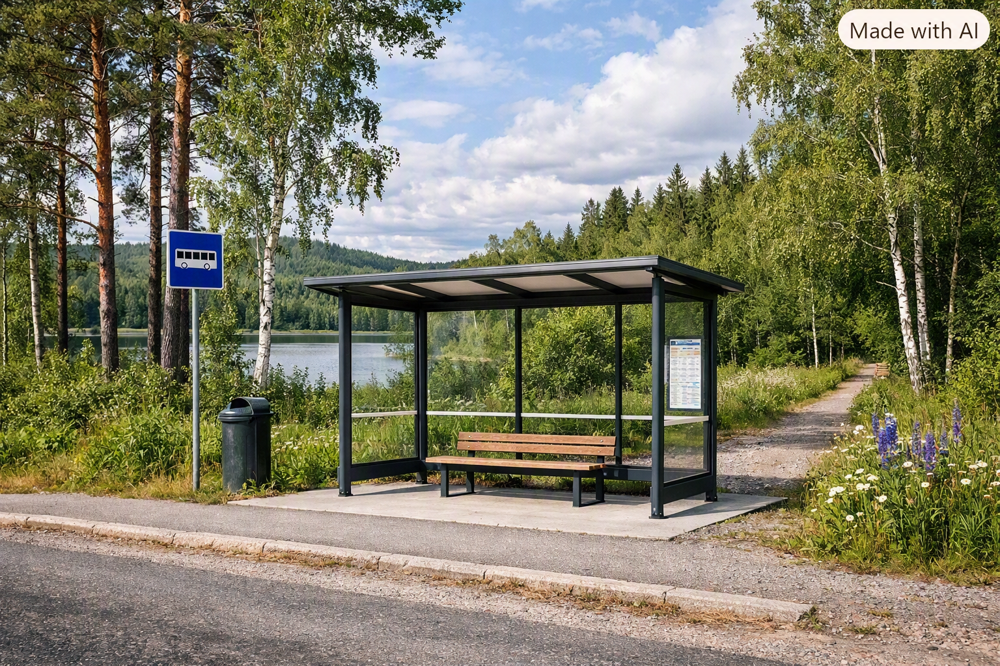

Välkommen till Nästa hållplats!
Res tillsammans - för en hållbar framtid
Kollektivtrafiken är en viktig del för ett mer hållbart samhälle. Genom att åka med exempelvis buss, tåg eller tunnelbana kan fler människor resa tillsammans och på så sätt minska antalet enskilda bilresor. När behovet av bilresor minskar bidrar detta till lägre utsläpp och mindre påverkan på miljön.
Via denna webbsida kan du få mer information och kunskap om tre olika färdsätt inom kollektivtrafiken samt deras miljöpåverkan.
